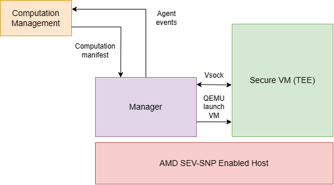

Manager#
Manager runs on the TEE-capable host (AMD SEV-SNP, Intel SGX or Intel TDX) and has 2 main roles:
- To deploy the well-prepared TEE upon the
runcommand and upload the necessary configuration into it (command line arguments, TLS certificates, etc...) - To monitor deployed TEE and provide remot logs
Manager exposes an API for control, based on gRPC, and is controlled by Computation Management service. Manager acts as the client of Computation Management service and connects to it upon the start via TLS-encoded gRPC connection.
Computation Management service is used to to configure computation metadata. Once a computation is created by a user and the invited users have uploaded their public certificates (used later for identification and data exchange in the enclave), a run request is sent. The Manager is responsible for creating the TEE in which computation will be ran and managing the computation lifecycle.
Communication between Computation Management cloud and the Manager is done via gRPC, while communication between Manager and Agent is done via Virtio Vsock. Vsock is used to send Agent events from the computation in the Agent to the Manager. The Manager then sends the events back to Computation Mangement cloud via gRPC, and these are visible to the end user.
The picture below shows where the Manager runs in the Cocos system, helping us better understand its role.

Manager <> Agent#
When TEE is booted, an Agent is automatically deployed and is used for outside communication with the enclave (via the API) and for computation orchestration (data and algorithm upload, start of the computation and retrieval of the result).
Agent is a gRPC server, and CLI is a gRPC client of the Agent. The Manager sends the Computation Manifest to the Agent via vsock and the Agent runs the computation, according to the Computation Manifest, while sending events back to manager on the status. The Manager then sends the events it receives from agent via vsock to Computation Mangement cloud through gRPC.
Setup and Test Manager <> Agent#
git clone https://github.com/ultravioletrs/cocos
cd cocos
N.B. All relative paths in this document are relative to
cocosrepository directory.
QEMU-KVM#
QEMU-KVM is a virtualization platform that allows you to run multiple operating systems on the same physical machine. It is a combination of two technologies: QEMU and KVM.
- QEMU is an emulator that can run a variety of operating systems, including Linux, Windows, and macOS.
- KVM is a Linux kernel module that allows QEMU to run virtual machines.
To install QEMU-KVM on a Debian based machine, run
sudo apt update
sudo apt install qemu-kvm
Create img directory in cmd/manager. Create tmp directory in cmd/manager.
Add V-sock#
The necessary kernel modules must be loaded on the hypervisor.
sudo modprobe vhost_vsock
ls -l /dev/vhost-vsock
# crw-rw-rw- 1 root kvm 10, 241 Jan 16 12:05 /dev/vhost-vsock
ls -l /dev/vsock
# crw-rw-rw- 1 root root 10, 121 Jan 16 12:05 /dev/vsock
Prepare Cocos HAL#
Get the hardware abstraction layer from the releases on the cocos repository. Two files will be required:
rootfs.cpio.gz- InitramfsbzImage- Kernel
Create two directories in cocos/cmd/manager, the directories are img and tmp.
Copy the downloaded files to cocos/cmd/manager/img. If using the latest version of cocos see the Developer guide for instructions on building HAL.
OVMF#
We need Open Virtual Machine Firmware. OVMF is a port of Intel's tianocore firmware - an open source implementation of the Unified Extensible Firmware Interface (UEFI) - used by a qemu virtual machine. We need OVMF in order to run virtual machine with focal-server-cloudimg-amd64. When we install QEMU, we get two files that we need to start a VM: OVMF_VARS.fd and OVMF_CODE.fd. We will make a local copy of OVMF_VARS.fd since a VM will modify this file. On the other hand, OVMF_CODE.fd is only used as a reference, so we only record its path in an environment variable.
sudo find / -name OVMF_CODE.fd
# => /usr/share/OVMF/OVMF_CODE.fd
MANAGER_QEMU_OVMF_CODE_FILE=/usr/share/OVMF/OVMF_CODE.fd
sudo find / -name OVMF_VARS.fd
# => /usr/share/OVMF/OVMF_VARS.fd
MANAGER_QEMU_OVMF_VARS_FILE=/usr/share/OVMF/OVMF_VARS.fd
NB: we set environment variables that we will use in the shell process where we run manager.
Deployment#
To start the service, execute the following shell script (note a server needs to be running see here). Additionally, the required environment variables should be set in cocos-manager.env beforehand.
# download the latest version of the service
go get github.com/ultravioletrs/cocos
cd $GOPATH/src/github.com/ultravioletrs/cocos
Variables should be set at this point in cocos-manager.env.
# builds binaries, copies them to bin and installs the env variables required for manager
make install
# run the service
make run
To enable AMD SEV support, start manager after setting these environment variables in cocos-manager.env.
MANAGER_QEMU_USE_SUDO=true
MANAGER_QEMU_ENABLE_SEV=true
MANAGER_QEMU_SEV_CBITPOS=51
You can also enable SEV_SNP through the environment variable:
MANAGER_QEMU_ENABLE_SEV_SNP=false
Then install the service:
# install the service with the environment variables
sudo make install
# start the service
sudo make run
Verifying VM Launch#
NB: To verify that the manager successfully launched the VM, you need to open three terminals on the same machine. In one terminal, you need to launch the computations server by executing (with the environment variables of choice):
go run ./test/computations/main.go <algo-path> <public-key-path> <attested-tls-bool> <data-paths>
and in the second the manager by executing (with the environment variables of choice):
sudo make run
Ensure that the Manager can connect to the computations server by setting the MANAGER_GRPC_URL with the url value of the computations server. In the last terminal window, you can run the verification commands.
To verify that the manager launched the VM successfully, run the following command:
ps aux | grep qemu-system-x86_64
You should get something similar to this
darko 324763 95.3 6.0 6398136 981044 ? Sl 16:17 0:15 /usr/bin/qemu-system-x86_64 -enable-kvm -machine q35 -cpu EPYC -smp 4,maxcpus=64 -m 4096M,slots=5,maxmem=30G -drive if=pflash,format=raw,unit=0,file=/usr/share/OVMF/OVMF_CODE.fd,readonly=on -drive if=pflash,format=raw,unit=1,file=img/OVMF_VARS.fd -device virtio-scsi-pci,id=scsi,disable-legacy=on,iommu_platform=true -drive file=img/focal-server-cloudimg-amd64.img,if=none,id=disk0,format=qcow2 -device scsi-hd,drive=disk0 -netdev user,id=vmnic,hostfwd=tcp::7020-:7002 -device virtio-net-pci,disable-legacy=on,iommu_platform=true,netdev=vmnic,romfile= -nographic -monitor pty
If you run a command as sudo, you should get the output similar to this one
root 37982 0.0 0.0 9444 4572 pts/0 S+ 16:18 0:00 sudo /usr/local/bin/qemu-system-x86_64 -enable-kvm -machine q35 -cpu EPYC -smp 4,maxcpus=64 -m 4096M,slots=5,maxmem=30G -drive if=pflash,format=raw,unit=0,file=/usr/share/OVMF/OVMF_CODE.fd,readonly=on -drive if=pflash,format=raw,unit=1,file=img/OVMF_VARS.fd -device virtio-scsi-pci,id=scsi,disable-legacy=on,iommu_platform=true -drive file=img/focal-server-cloudimg-amd64.img,if=none,id=disk0,format=qcow2 -device scsi-hd,drive=disk0 -netdev user,id=vmnic,hostfwd=tcp::7020-:7002 -device virtio-net-pci,disable-legacy=on,iommu_platform=true,netdev=vmnic,romfile= -object sev-guest,id=sev0,cbitpos=51,reduced-phys-bits=1 -machine memory-encryption=sev0 -nographic -monitor pty
root 37989 122 13.1 5345816 4252312 pts/0 Sl+ 16:19 0:04 /usr/local/bin/qemu-system-x86_64 -enable-kvm -machine q35 -cpu EPYC -smp 4,maxcpus=64 -m 4096M,slots=5,maxmem=30G -drive if=pflash,format=raw,unit=0,file=/usr/share/OVMF/OVMF_CODE.fd,readonly=on -drive if=pflash,format=raw,unit=1,file=img/OVMF_VARS.fd -device virtio-scsi-pci,id=scsi,disable-legacy=on,iommu_platform=true -drive file=img/focal-server-cloudimg-amd64.img,if=none,id=disk0,format=qcow2 -device scsi-hd,drive=disk0 -netdev user,id=vmnic,hostfwd=tcp::7020-:7002 -device virtio-net-pci,disable-legacy=on,iommu_platform=true,netdev=vmnic,romfile= -object sev-guest,id=sev0,cbitpos=51,reduced-phys-bits=1 -machine memory-encryption=sev0 -nographic -monitor pty
The two processes are due to the fact that we run the command /usr/bin/qemu-system-x86_64 as sudo, so there is one process for sudo command and the other for /usr/bin/qemu-system-x86_64.
You can view logs from manager using the following commands:
# check manager status
sudo systemctl status cocos-manager
# follow logs from manager
journalctl -u cocos-manager -n 20 -f